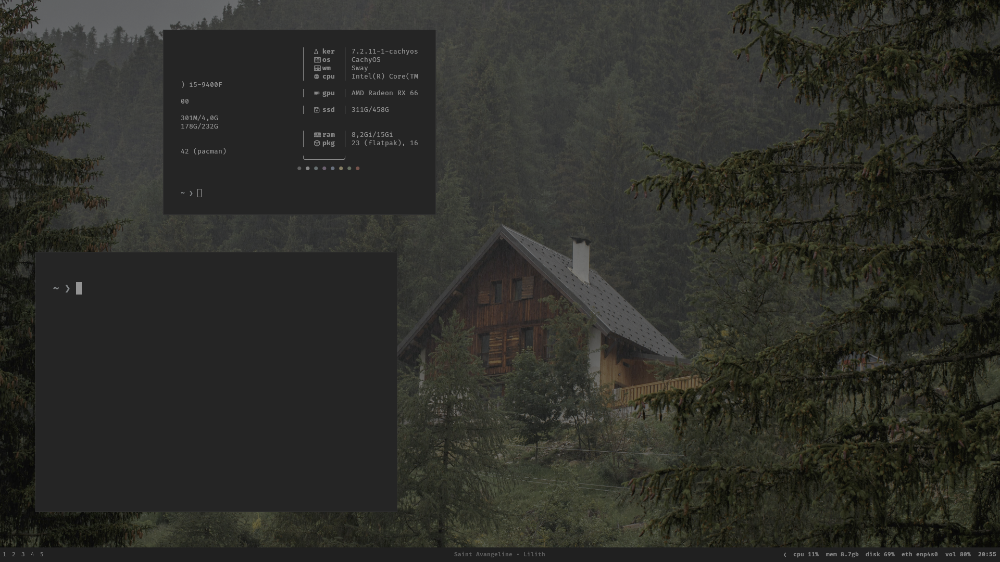
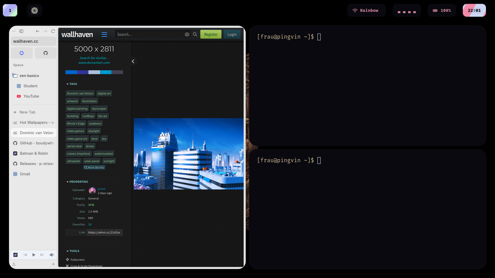
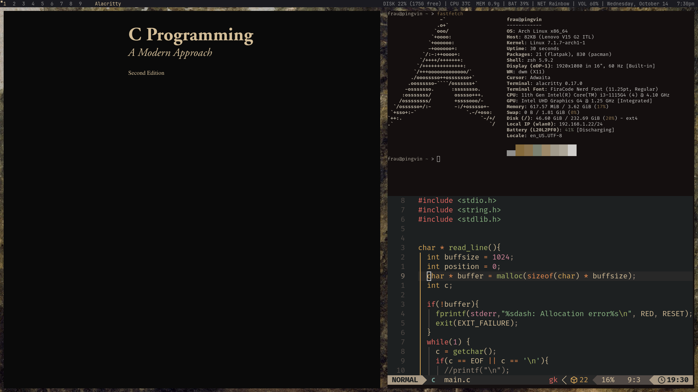

Rice showcase
Linux setups modified or created from scratch.
sway
My current Arch-based desktop: Sway, Foot, Rofi, and a quiet Waybar. Dark terminals, minimal borders, and a forest in the background. Built on CachyOS.

hypr
A modified Gentoo Linux setup adapted for Arch Linux.

dwm
A minimalist Arch Linux desktop with a customized build of dwm.
